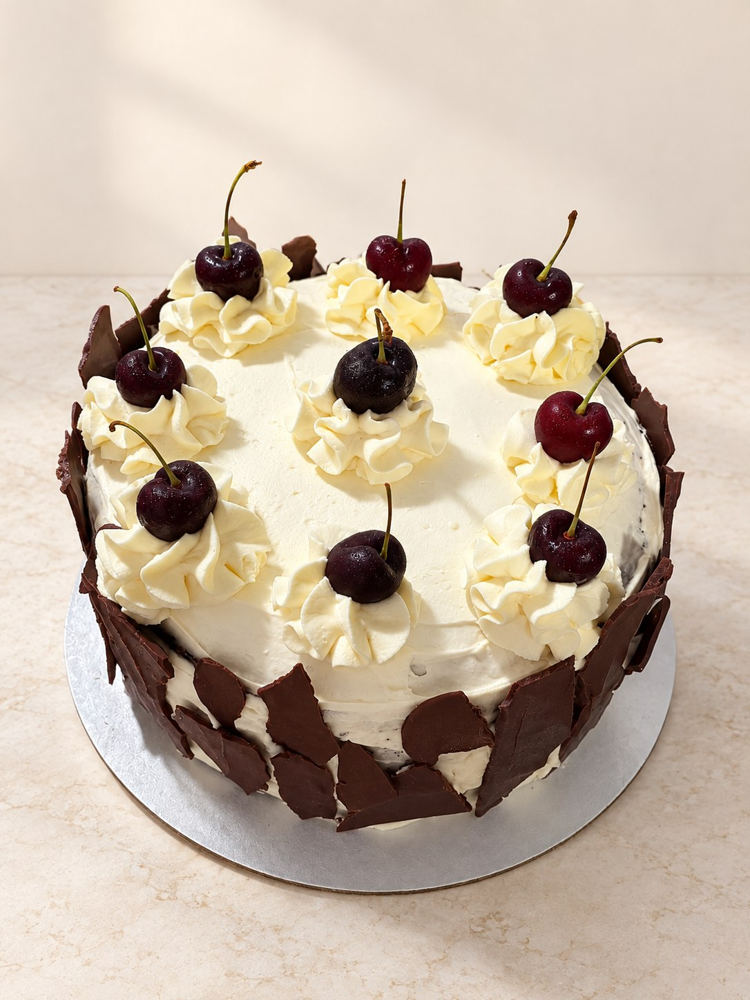
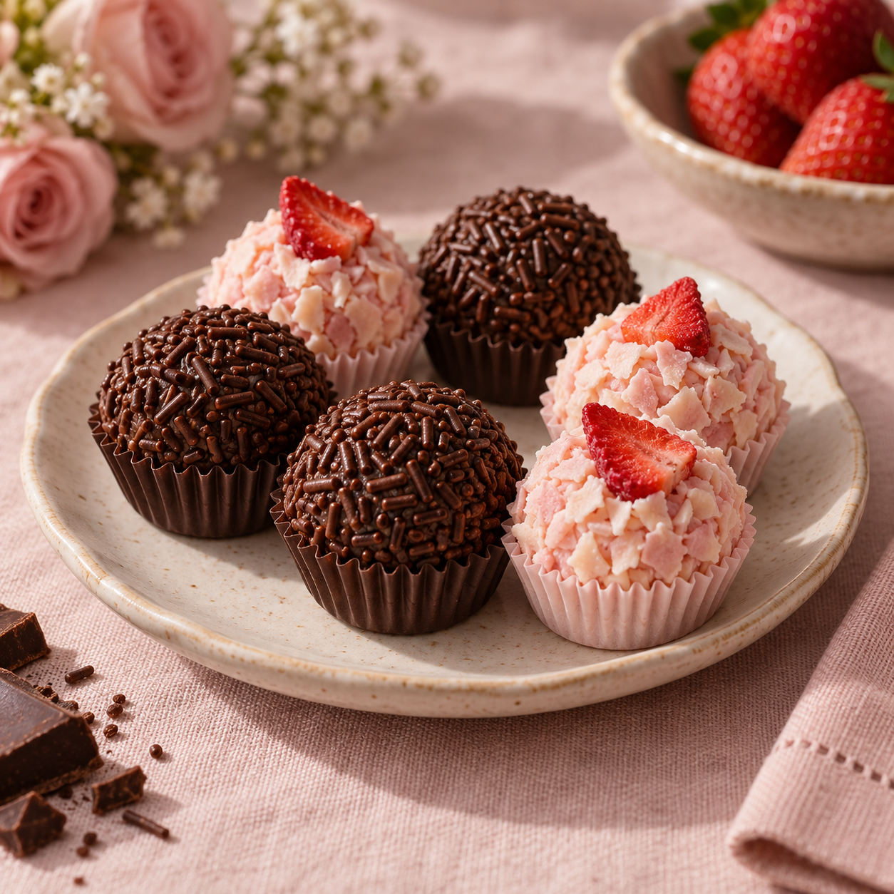
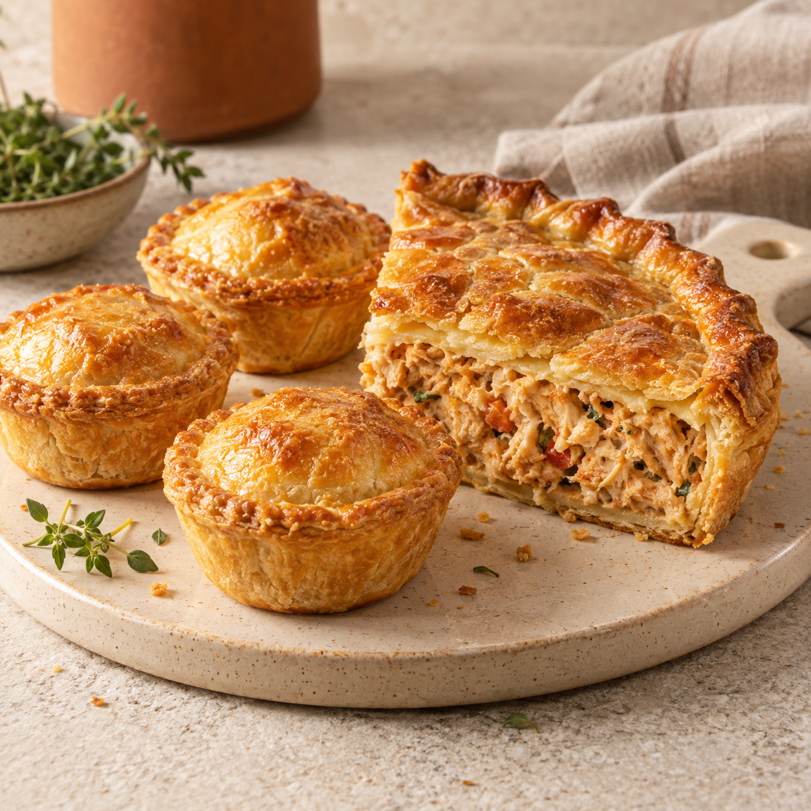

Feito com carinho
Sabores para cada momento.
De um bolo para celebrar a pequenas delícias para compartilhar, encontre uma opção para deixar a ocasião ainda mais especial.

01 / 29
01 / Bolos
O centro das boas lembranças.
Um bolo especial torna a comemoração ainda mais memorável. Conte sua ideia e os detalhes da ocasião para planejar sua encomenda.
- Para aniversários e comemorações
- Detalhes pensados para sua ocasião
- Feitos com carinho

Para adoçar02 / Doces
Pequenos momentos, grandes sorrisos.
Doces para compor a mesa, acompanhar uma festa ou simplesmente deixar o encontro mais gostoso.
- Para dividir com quem você gosta
- Uma escolha para festas e encontros
- Preparados com cuidado

Para compartilhar03 / Salgados
Sabor de encontro e conversa.
Opções salgadas para reunir as pessoas à mesa e completar os momentos que merecem ser celebrados.
- Para festas e reuniões
- Para servir e compartilhar
- Com aquele toque caseiro
Vamos preparar algo especial?
Sua ideia pode virar uma delícia.
Conte o que você imagina para sua próxima ocasião.